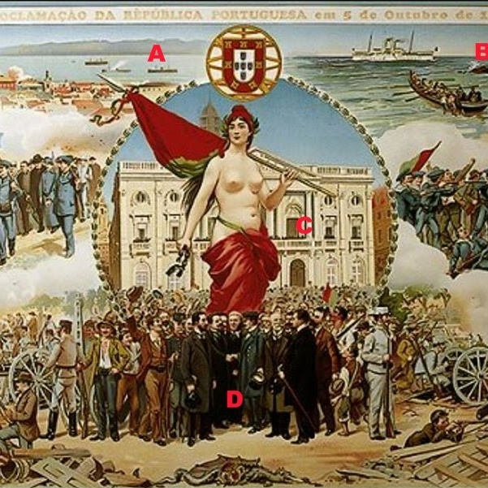
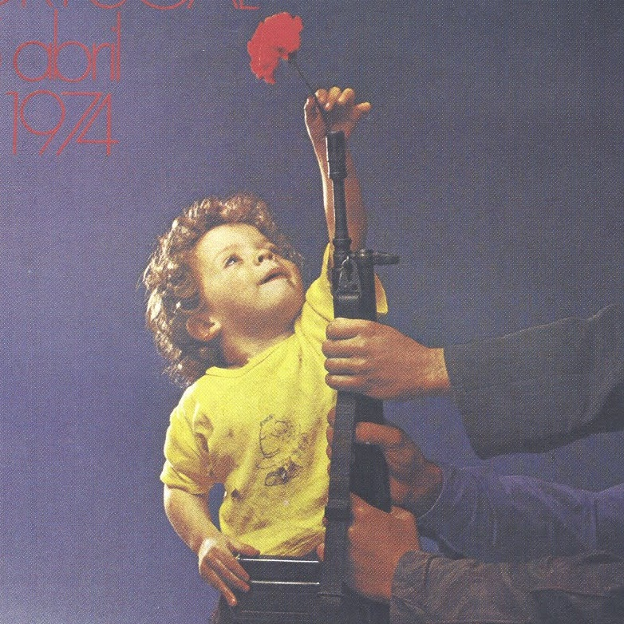

Apresentação
Com origens que remontam ao século XVIII, a Universidade do Porto é uma das maiores instituições de ensino e investigação científica de Portugal e uma das 100 melhores universidades da Europa.
Mais de 31.000 estudantes, 2.300 professores e investigadores e 1.600 funcionários não docentes frequentam as suas 15 escolas e 60 unidades de investigação, distribuídas por três polos universitários localizados na cidade do Porto.
Com 14 faculdades e uma business school, a Universidade do Porto oferece uma excecional variedade de cursos, que abrangem todos os níveis de ensino superior e todas as grandes áreas do conhecimento. Na verdade, com mais de 600 programas de formação (das licenciaturas aos doutoramentos, passando pela educação contínua), a Universidade do Porto possui soluções de ensino para todos os públicos.
A qualificação de excelência do corpo docente (81% dos 1.608,2 docentes e investigadores ETI são doutorados) garante a elevada qualidade da formação da Universidade do Porto, que a torna na universidade portuguesa mais procurada pelos candidatos ao Ensino Superior e a preferida dos estudantes com as mais altas classificações escolares.
Todos os anos, cerca de 3.700 estudantes estrangeiros, de 146 diferentes países do mundo, frequentam a Universidade do Porto. E se 1.810 destes estudantes chegam através de programas internacionais de mobilidade, mais de metade deles (1.890) escolheram a U.Porto para realizar a totalidade do seu curso superior.
A Universidade do Porto é o maior produtor de Ciência em Portugal, sendo responsável por mais de 23% dos artigos científicos portugueses indexados anualmente na ISI Web of Science.
De facto, alguns dos mais produtivos e internacionalmente reconhecidos centros portugueses de Investigação e Desenvolvimento pertencem à Universidade do Porto. Mais de metade das suas 60 unidades de investigação foram classificadas com “Excelente” ou “Muito Bom” nas mais recentes avaliações independentes internacionais.
Nos últimos anos, a U.Porto tem apostado na valorização económica das suas atividades de investigação através de parcerias com algumas das maiores empresas nacionais que já resultaram em diversas inovações com sucesso comprovado em mercados nacionais e internacionais.
A inovação produzida pela Universidade também já conduziu à criação de mais de 120 patentes nacionais e internacionais e outras tantas empresas. Só no UPTEC - Parque de Ciência e Tecnologia da Universidade do Porto estão incubadas mais de uma centena de startups, responsáveis pela criação de 900 novos postos de trabalho qualificados.
Por tudo isto, a Universidade do Porto é a instituição portuguesa com a melhor classificação nos mais importantes rankings internacionais de Ensino e Investigação Científica, que sistematicamente colocam a U.Porto entre as 350 melhores universidades do mundo.
Faculdades
14 faculdades, 2 pólos, 1 família.
FAUP
Faculdade de Arquitectura da Universidade do Porto
FBAUP
Faculdade de Belas-Artes da Universidade do Porto
FCNAUP
Faculdade de Ciências da Nutrição e Alimentação da Universidade do Porto
FADEUP
Faculdade de Desporto da Universidade do Porto
FFUP
Faculdade de Farmácia da Universidade do Porto
FLUP
Faculdade de Letras da Universidade do Porto
FMUP
Faculdade de Medicina da Universidade do Porto
FPCEUP
Faculdade de Psicologia e de Ciências da Educação da Universidade do Porto
História
Há mais de um século a criar profissionais de excelência.
-
Março 1911
Fundação da Universidade
A Universidade do Porto foi fundada por decreto de 22 de Março de 1911, emanado do Governo Provisório da República. Se bem que seja possível apontar como as suas antecessoras mais remotas a Aula de Náutica, estabelecida por D. José I em 1762, e a Aula de Debuxo e Desenho, criada por D. Maria I em 1779, a Universidade vai basear-se fundamentalmente sobre instituições de ensino superior criadas no século XIX: a Academia Politécnica e a Escola Médico-Cirúrgica do Porto.
-

Abril 1911
Primeira grande reestruturação
A implantação da República, em 5 de Outubro de 1910, provocou importantes modificações no campo do ensino, nomeadamente a criação de duas universidades, a de Lisboa e a do Porto. Pelo decreto de 19 de Abril de 1911, a Universidade do Porto ficou assim constituída: uma Faculdade de Ciências Matemáticas, Físico-Químicas e Histórico-Naturais, uma Faculdade de Medicina com uma Escola de Farmácia anexa e ainda uma Faculdade de Comércio que nunca se concretizou. A Faculdade de Ciências anexava uma Escola de Engenharia.
-
Julho 1911
Inauguração
A UP foi inaugurada a 16 de Julho de 1911 e, nesse mesmo dia, foi eleito o primeiro Reitor, o matemático Gomes Teixeira. A partir de agora é confiado à Universidade o seu próprio governo económico e científico. Também a autonomia do ensino é reconhecida. O governo da Universidade pertence aos corpos Académicos: Senado, Assembleia Geral dos Professores, Conselhos das Faculdades e Escolas e aos seus Delegados efectivos - Director e Reitor.
-

Abril 1974
Expansão pós-revolução
A Universidade do Porto conheceu uma grande expansão com a revolução de Abril de 1974. Às seis faculdades existentes juntaram-se, como criação de raiz ou escolas integradas, as seguintes: ICBAS - Instituto de Ciências Biomédicas Abel Salazar (1975), Faculdade de Ciências do Desporto e de Educação Física (1975), Faculdade de Psicologia e de Ciências da Educação (1977), Faculdade de Arquitectura (1979), Faculdade de Medicina Dentária (1989), Faculdade de Ciências da Nutrição e da Alimentação (1992), Faculdade de Belas Artes (1992) e Faculdade de Direito (1994).
-
Faz
história
connosco!
Os nossos alunos
Nos quais depositamos o nosso futuro.
Daniel Teixeira
ei10067@fe.up.pt
Diogo Ribeiro
ei11005@fe.up.pt
Hugo Cardoso
ei11154@fe.up.pt
João Monteiro
ei11055@fe.up.pt

Vasco Gomes
ei11161@fe.up.pt
João Monteiro
Estou na UP desde 2011 e posso dizer que é uma unibersidade muito boa. Sou aluno da FEUP e a nossa é a melhor faculdade da melhor unibersidade do melhor país.
Daniel Teixeira
*universidade
Diogo Ribeiro
Se vais ser caloiro, manda-me MP. Posso-te responder ao que quiseres sobre a UP.
Hugo Cardoso
UP FTW, FEUP FTW, ISEP FTL.
Vasco Gomes
Estou no MIEIC na FEUP na UP em PT na UE.